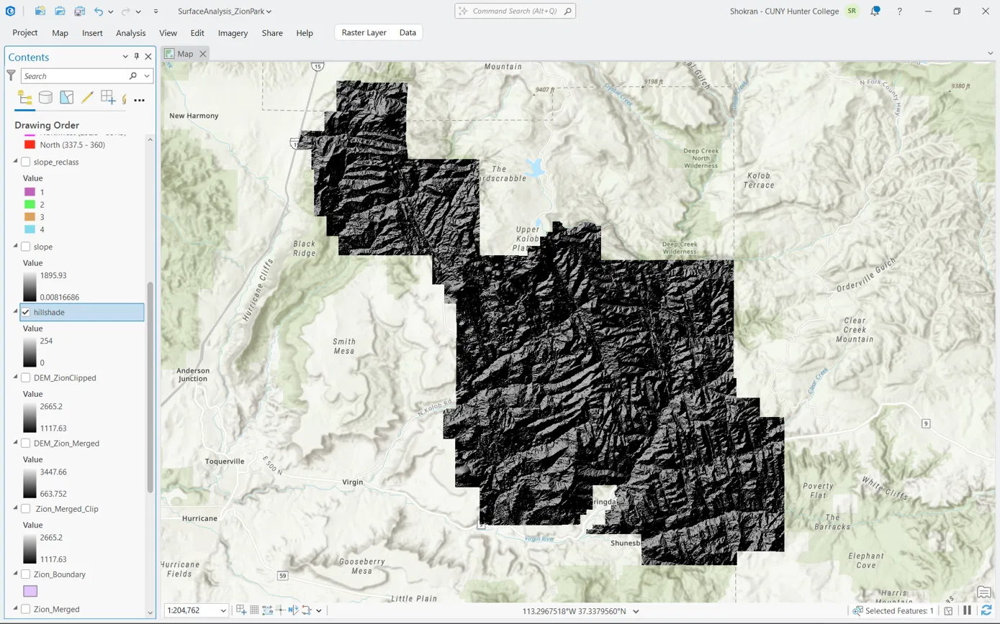
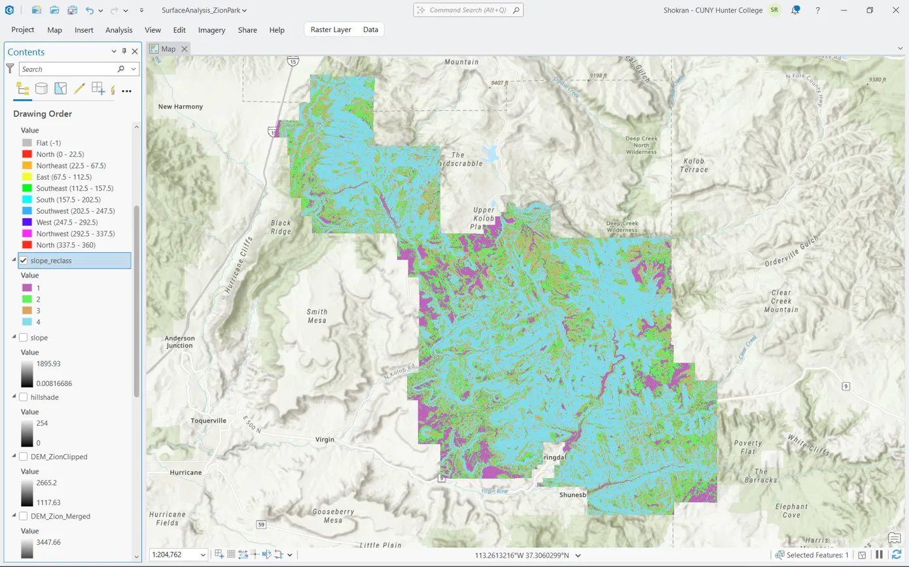
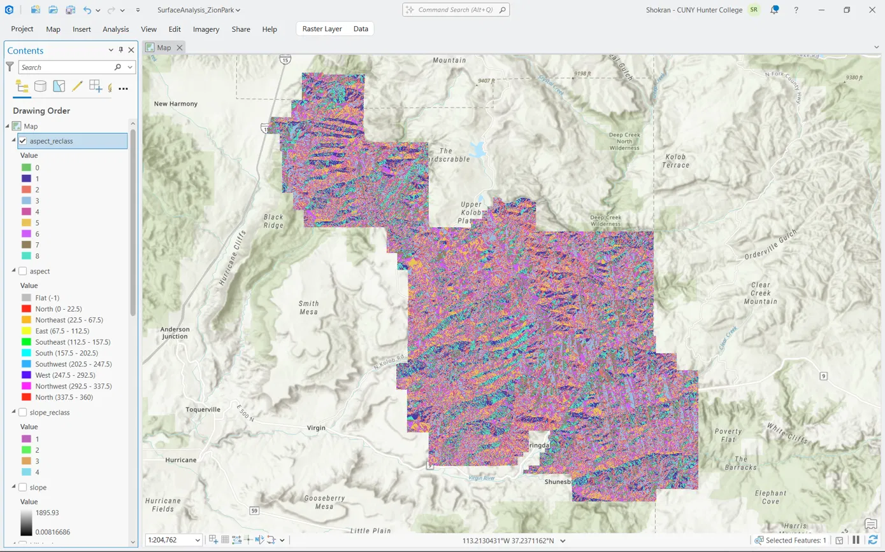

Assessing Zion Canyon for a New Trail Route - Zion National Park, UT
Zion National Park's trail planning office wants to assess Zion Canyon for a possible new trail route. You've been asked to analyze the terrain two ways: Slope (to identify which areas are walkable versus hazardously steep), and Aspect (to identify which canyon walls face south, meaning more sun exposure, drier trail conditions, and higher fire risk to factor into planning).
apps.nationalmap.gov/downloader/. No account is required.-113.25, Y min (Latitude) = 37.10, X max (Longitude) = -112.80, Y max (Latitude) = 37.55.n38w113 and n38w114), click "Download Link (TIF)". If a tile has duplicate entries at different published dates, use the most recent one still labeled "1/3 arc-second".-112.80 (the less-negative value) belongs in the "max" box, not the "min" box at first glance. Double-check each value lands in the correct field before continuing.n38w113 and n38w114. You need BOTH, downloading only one will leave part of the park uncovered. Also watch for a duplicate entry in the results list: the USGS 1 arc-second (~30m) dataset is a much coarser product that is often listed alongside it. Skip it regardless of its publish date, and only download results explicitly labeled "1/3 arc-second".hub.arcgis.com (not the National Park Service's own open-data portal, see the note below).public-nps.opendata.arcgis.com) also hosts park boundary layers, but searching it directly for "boundary" returns dozens of unrelated, park-specific municipal boundaries. Searching hub.arcgis.com for "NPS Boundary" instead surfaces the one authoritative dataset that already contains every park boundary nationwide in a single layer. Searching "Zion boundary" directly does not reliably surface the right layer, the general "NPS Boundary" phrase works better since that is the dataset's actual title.Enter the access code your instructor gave you to view the Project Instructions.
Incorrect code, please try again.
Assessing Zion Canyon for a New Trail Route - Zion National Park, UT. Spatial Analysis, Surface Analysis.
Zion_Boundary. This produces Zion's real, exact shape, not a rectangle.DEM_Zion_Merged. Pixel Type: 32_BIT_FLOAT. Number of Bands: 1. Click Run.DEM_Zion_Merged. Check "Use Input Features for Clipping Geometry" so the clip follows the park's actual outline rather than a bounding rectangle, and set the clipping features to Zion_Boundary. Output Raster Dataset Name: DEM_ZionClipped. Click Run.DEM_ZionClipped. Leave Azimuth (315) and Altitude (45) at their defaults to start. Output raster name: hillshade. Click Run.DEM_ZionClipped. Output Measurement: Percent Rise. Output raster name: slope. Click Run.slope.slope_reclass. Click Run.DEM_ZionClipped. Output raster name: aspect. Click Run.aspect.aspect_reclass. Click Run.hillshade to the map first (bottom of the drawing order), symbolized in grayscale, as a backdrop.slope_reclass or aspect_reclass above it. In its Symbology pane, set Layer Transparency to roughly 40-50% so the hillshade texture shows through underneath.Enter the access code your instructor gave you to view the Result Reference.
Incorrect code, please try again.
Assessing Zion Canyon for a New Trail Route - Zion National Park, UT. Spatial Analysis, Surface Analysis.
These are real, verified outputs from a successful run of this lab over Zion National Park's full boundary (not just the canyon corridor). Use them to check your own results for a similar overall pattern, exact colors and proportions should look comparable depending on your own symbology choices.

Hillshade output, default Azimuth 315° / Altitude 45°.

Slope, Reclassified. 1 = Easy (magenta), 2 = Moderate (green), 3 = Difficult (orange), 4 = Hazardous (cyan).
slope_reclass, Attribute Table, and compare the Count column across the four class rows to confirm class 4 genuinely has the most cells and class 1 the fewest, consistent with a mostly-rugged park with a narrow flat corridor.
Aspect, Reclassified. Eight cardinal direction bins plus Flat, color-coded by compass direction.
Paste this into the ArcGIS Pro Python window (View tab, Python) with the project open and both DEM tiles and Zion_Boundary already created as described above: